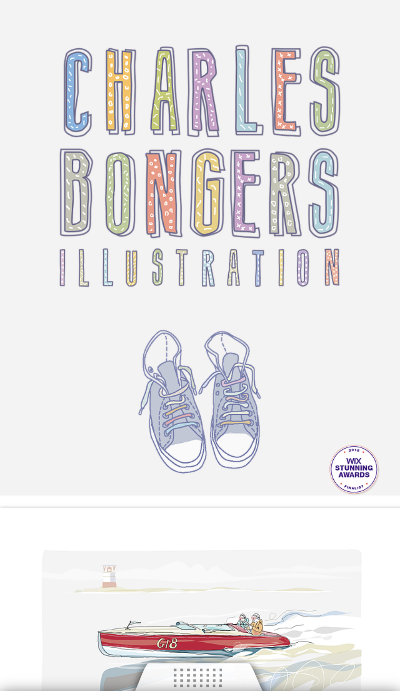
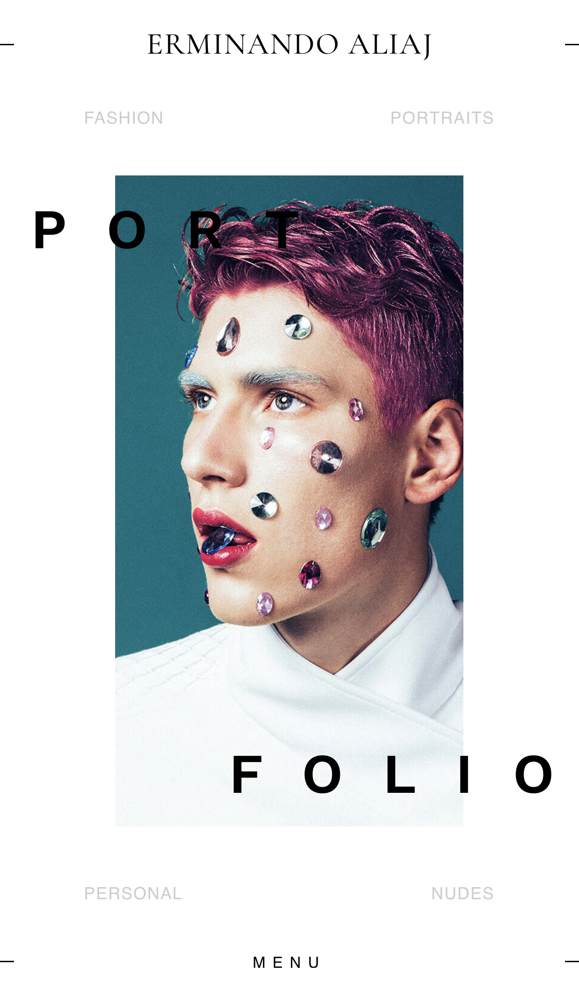
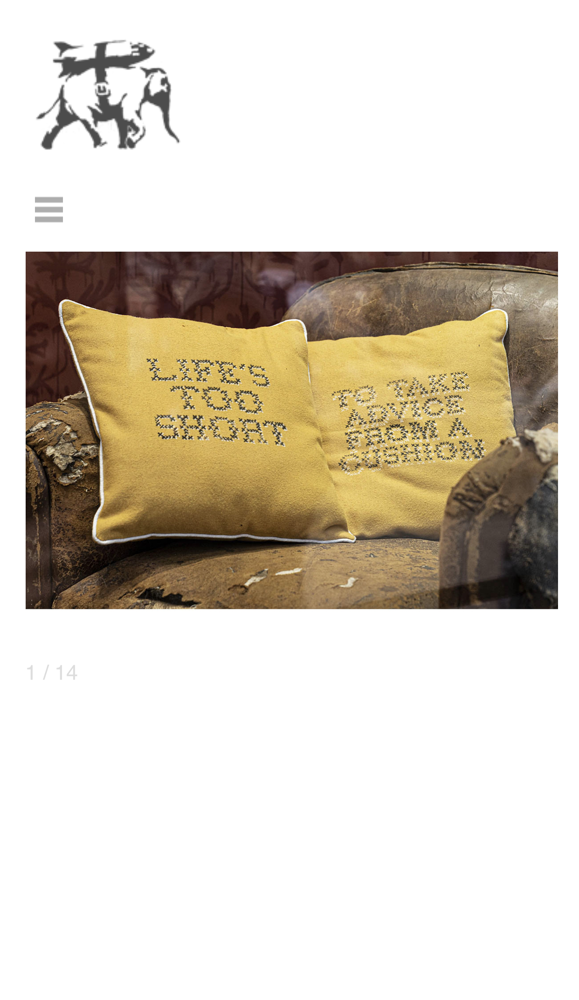

Portfilo Websites
This artist portfolio webpage is very interacting, allowing for the viewer to interact with the art work digitality and it was new for me to see a website like this. The navigation was on the footer and it worked well it was easy to navigate and great example of an interactive website.

This is a digital work this truly allowed to display his illustration and artwork, having his main art with descriptions, going straight to the point when opening his webpage really works with being straightforward and a good way to display digital work.

When entering the website, I was truly mind blown, with the different patterns that appeared when the page was opened. I Was very interested and wanted to see more of this artist's work. Allowing me to gain a lot of interest of the artist from just the fantastic introduction of the website.

Being aware of his work, I was very excited to see his portfolio website. The layout of the website is very interesting, with having the images being center of attention, having the navigation on the left this allowed for a focus point to the art. Being easy to navigate around the website this was truly an organized website.

This is a great example of an artist portfolio webpage, very interacting with the viewer and the animation is amazing allowing a great way to display each of the art works. The navigation and every layout of organized and easy to navigate and overall the best portfolio I have ever seen